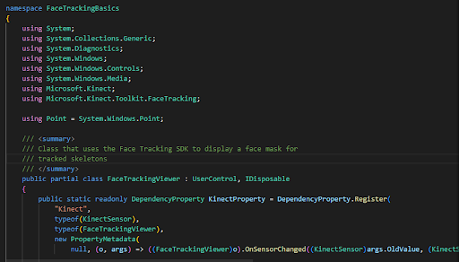
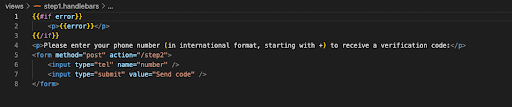

Concept: To use facial recognition with 2 factor authentication to create a secure lock combined with constantly changing PIN numbers for the 2 factor authentication.
Motivation: To challenge ourselves by using older technology to see if the functionality would be similar to newer technology.
The code above is used to check whether the token input into the 2 faction authentication matches what it should be.
The code above is used to have the kinect sensor track the face of the user.
The code above is used to request for the phone number of the user to send the 2 factor authentication code to.